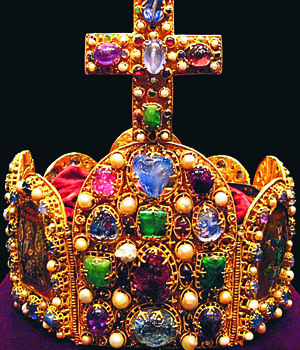
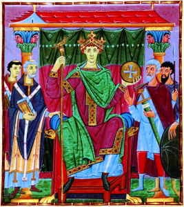
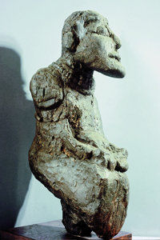

Lezione 7  Sacro romano impero
Sacro romano impero

-
250
320
-
110
370
-
40
345
-
180
390

ROMA
Nel 962, quasi un secolo dopo la fine del Sacro romano impero, Ottone I, re di Germania, viene incoronato imperatore. La corona di oro e gemme che viene posta sul capo di Ottone I risale alla metà del X secolo ed oggi è conservata alla Camera del Tesoro di Vienna. 
SASSONIA
Ottone III, imperatore dal 983 al 1002, in una miniatura dipinta intorno all’anno Mille nell’abbazia di Reichenau. In essa viene celebrata l’immagine di autorità sacra del potere imperiale voluta dalla dinastia ottoniana: il personaggio a sinistra è papa Silvestro II, che dell’imperatore è stato precettore in gioventù. La dinastia degli Ottoni: Ottone I (imperatore dal 962 al 973), Ottone II (973-983), Ottone III imperatore (983-1002). 1037: Emanazione del diploma imperiale Constitutio de feudis, che concede ai conti e ai vassalli l’ereditarietà dei feudi. Nasce la figura dei vescovi conti.
SCANDINAVIA
Il cristianesimo si diffonde nel Nord Europa: nel 1008 Olaf il Giovane (Svezia) viene battezzato, nel 1016 il re Olaf il Santo (Norvegia), nel 1018 il re Canuto il Grande (Danimarca). La conversione al cristianesimo delle popolazioni nordiche venne a soppiantare il culto delle divinità pagane come Odino, probabilmente raffigurato in questa scultura del I secolo.UNGHERIA
955 Ottone I, re di Germania, sconfigge i màgiari (gli ungari), arrivati in Europa dalle steppe russe nell’895-896. Velocissimi a cavallo, compiono scorrerie verso la Francia, la Germania, l’Italia. Cristianizzati, nel 1001 il loro capo Stefano I viene incoronato re.